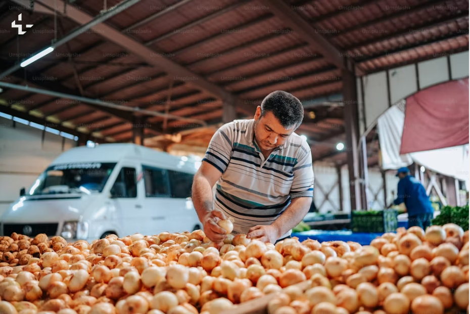
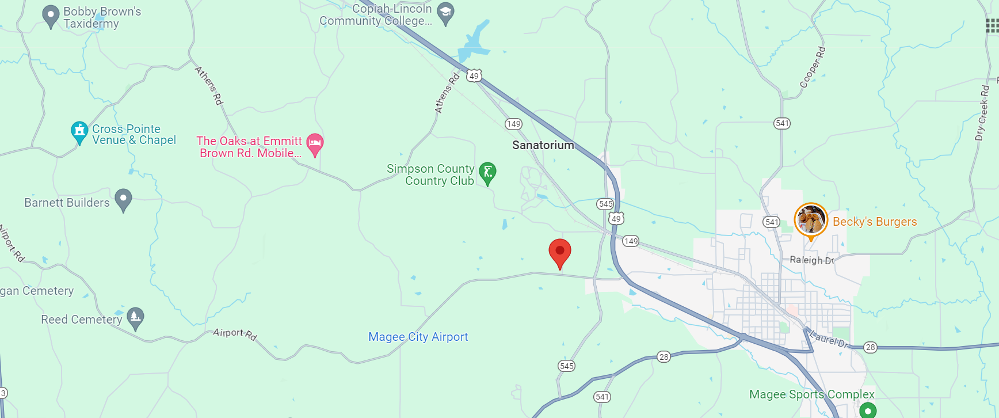

Welcome to Our Company
Welcome to Frutia
At Frutia, we're passionate about bringing you the freshest, highest-quality fruits straight from the farm to your table. Our mission is simple: to promote healthy living and well-being by providing delicious, nutritious fruits that you can feel good about enjoying every day.
Our Commitment to Quality
At Frutia, quality is our top priority. We work closely with trusted growers who share our commitment to excellence, ensuring that only the finest fruits make it to your doorstep. From hand-picked strawberries to sun-ripened oranges, every fruit in our selection meets rigorous quality control standards to guarantee freshness and flavor.
Sustainability Practices
We're dedicated to preserving the planet for future generations, which is why sustainability is at the heart of everything we do. From sustainable farming practices to eco-friendly packaging, we're constantly striving to reduce our environmental footprint and make a positive impact on the world around us.
Health Benefits of Fruits
Fruits aren't just delicious—they're also incredibly good for you! Packed with vitamins, minerals, and antioxidants, fruits are nature's way of nourishing your body and boosting your immune system. Discover the countless health benefits of fruits and learn how to incorporate them into your daily routine for a healthier, happier you.
Seasonal Favorites
Each season brings its own bounty of delicious fruits to enjoy. From juicy watermelons in the summer to crisp apples in the fall, there's always something fresh and flavorful to savor. Explore our seasonal favorites and discover new ways to enjoy the best that nature has to offer.
Farmers and Growers
 Behind every delicious fruit is a dedicated farmer or grower who's passionate about their craft. Meet the hardworking individuals who produce the fruits you love and learn about their sustainable farming practices, dedication to quality, and commitment to preserving the land for future generations.
Customer Testimonials
Don't just take our word for it—hear what our customers have to say about their experience with Frutia! From rave reviews about the freshness of our fruits to glowing testimonials about our friendly customer service, find out why Frutia is the go-to choice for discerning fruit lovers everywhere.
Healthy Living Tips
Living a healthy lifestyle is easy with Frutia! Get expert tips and advice on how to make the most of your fruits, from creative recipe ideas to meal planning inspiration. Whether you're looking to boost your energy, support your immune system, or simply enjoy delicious, nutritious food, we've got you covered.
Community Engagement
At Frutia, we believe in giving back to the communities we serve. Learn about our initiatives to fight food insecurity, promote healthy eating habits, and support local farmers and growers. Together, we can make a difference and create a healthier, more sustainable world for all.
Looking to the Future
As we look ahead to the future, our commitment to quality, sustainability, and customer satisfaction remains unwavering. Join us on our journey as we continue to grow, innovate, and inspire healthier, happier lives through the power of fresh, delicious fruits.
Behind every delicious fruit is a dedicated farmer or grower who's passionate about their craft. Meet the hardworking individuals who produce the fruits you love and learn about their sustainable farming practices, dedication to quality, and commitment to preserving the land for future generations.
Customer Testimonials
Don't just take our word for it—hear what our customers have to say about their experience with Frutia! From rave reviews about the freshness of our fruits to glowing testimonials about our friendly customer service, find out why Frutia is the go-to choice for discerning fruit lovers everywhere.
Healthy Living Tips
Living a healthy lifestyle is easy with Frutia! Get expert tips and advice on how to make the most of your fruits, from creative recipe ideas to meal planning inspiration. Whether you're looking to boost your energy, support your immune system, or simply enjoy delicious, nutritious food, we've got you covered.
Community Engagement
At Frutia, we believe in giving back to the communities we serve. Learn about our initiatives to fight food insecurity, promote healthy eating habits, and support local farmers and growers. Together, we can make a difference and create a healthier, more sustainable world for all.
Looking to the Future
As we look ahead to the future, our commitment to quality, sustainability, and customer satisfaction remains unwavering. Join us on our journey as we continue to grow, innovate, and inspire healthier, happier lives through the power of fresh, delicious fruits.
Company History
Founding: Frutia was established in 2010 with a simple yet ambitious goal: to provide fresh, high-quality fruits, vegetables, and honey directly to consumers. The company was founded by a group of passionate individuals who shared a deep commitment to promoting healthy living and sustainable agriculture while supporting local farmers.Early Years: Starting as a small local operation nestled in the heart of the countryside, Frutia began sourcing produce from nearby farms renowned for their dedication to organic and environmentally friendly farming practices. Despite modest beginnings, the company quickly earned a reputation for excellence, driven by its unwavering dedication to freshness and customer satisfaction.
 Expansion: As demand for fresh, locally sourced produce grew, Frutia expanded its reach by forging partnerships with additional farmers and investing in cutting-edge facilities to ensure quality and consistency. Leveraging technology and innovative delivery methods, Frutia extended its reach to customers across a wider geographic area while remaining steadfast in its commitment to sustainability.
Expansion: As demand for fresh, locally sourced produce grew, Frutia expanded its reach by forging partnerships with additional farmers and investing in cutting-edge facilities to ensure quality and consistency. Leveraging technology and innovative delivery methods, Frutia extended its reach to customers across a wider geographic area while remaining steadfast in its commitment to sustainability. Community Engagement: Throughout its journey, Frutia remained deeply ingrained in the fabric of the community. Actively participating in local farmers' markets, community events, and educational initiatives, the company sought to promote healthy eating habits and environmental stewardship. By fostering strong relationships with customers and local partners, Frutia evolved from a mere business into a trusted member of the community.
Present Day: Today, Frutia stands as a beacon of excellence in the realm of fresh, organic produce and honey. With a growing customer base and an unyielding dedication to quality and sustainability, the company looks toward the future with optimism, eager to continue its mission of nourishing both people and the planet.
Our Mission
At Frutia, quality is our top priority. We work closely with trusted growers who share our commitment to excellence, ensuring that only the finest fruits make it to your doorstep. From hand-picked strawberries to sun-ripened oranges, every fruit in our selection meets rigorous quality control standards to guarantee freshness and flavor.
Our Team
- Emily Roberts - CEO
- Michael Johnson - Chairman of the Board
- Sophia Nguyen - Chief Operating Officer (COO)
- Daniel Smith - Chief Financial Officer (CFO)
- Jennifer Martinez - Chief Marketing Officer (CMO)
Our Values
- Customer satisfaction
- Integrity
- Innovation
- Teamwork
- Continuous improvement
Why Choose Us?
There are many reasons to choose our company, including:
- High-quality products/services
- Excellent customer support
- Competitive prices
- Fast and reliable delivery
- Commitment to sustainability
Location Details
We Are Located At
Healthy Living Tips Living a healthy lifestyle is easy with Frutia! Get expert tips and advice on how to make the most of your fruits, from creative recipe ideas to meal planning inspiration. Whether you're looking to boost your energy, support your immune system, or simply enjoy delicious, nutritious food, we've got you covered.
Delivery Locations
- Jackson, MS
- Hattiesburg, MS
- Laurel, MS
- Brookhaven, MS
- Meridian, MS
- McComb, MS
- Vicksburg, MS
- Natchez, MS
- Canton, MS
- Yazoo City, MS
- Collins, MS
- Hazlehurst, MS
- Brandon, MS
- Clinton, MS
- Philadelphia, MS
Departure Time
- Weekdays (Monday to Friday)
- Morning: 7:00 AM to 9:00 PM
- Afternoon: 1:00 PM to 3:00 PM
- Evening: 4:00 PM to 5:00 PM
- Weekends (Saturday and Sunday)
- Morning: 9:00 AM to 11:00 AM
- Afternoon: 2:00 PM to 3:00 PM
- Evening: 4:00 PM to 5:00 PM
Contact Details
Address: 111 Little Dick Welch Rd, Magee
Phone: +1 601 112-2115
Email: frutia@gmail.com
Payment Guide
(Payment through PayPal)
- Open PayPal app/website
- Login or Sing up(No Acconut)
- Click On Send And Request
- Paste email mainyabrian@gmail.com
- Choose the goods and services option
- Send
PAYMENT BEFORE DELIVERY POLICY
Customer Reviews
Anna Thompson
"The dandelion honey from Frutia is amazing! It has a unique flavor that I absolutely love. Highly recommend!"
Michael Brown
"I’m so impressed with the quality of the fruits and vegetables. Everything is always fresh and delicious."
Samantha Lee
"The organic vegetables from Frutia are top-notch. I feel good knowing my family is eating healthy, pesticide-free produce."
David Martinez
"Their honey is the best I’ve ever tasted. Perfectly sweet and rich in flavor. I use it in my tea every day."
Jessica Wilson
"Fast delivery and excellent customer service. The fruits are always juicy and flavorful."
John Evans
"The variety of produce is fantastic. I’ve found some rare vegetables here that I can’t get anywhere else."
Karen Johnson
"I was disappointed with my last order. Some of the vegetables were wilted and not as fresh as usual."
Emily Clark
"I love the subscription box option. It’s so convenient and the quality is always consistent."
Daniel Harris
"Frutia’s honey is not only delicious but also has great health benefits. I’m a fan for life!"
Rachel Lewis
"I ordered a gift basket for a friend and they couldn’t stop raving about it. Fresh, delicious, and beautifully packaged."
Thomas Clark
"The dandelion honey was too strong for my taste. I prefer a milder flavor."
Matthew Young
"The dandelion honey has a distinct taste that adds a special touch to my recipes. Great product!"
Olivia King
"I’ve been buying my fruits and vegetables from Frutia for months now. They never disappoint."
Christopher Scott
"The quality of their produce is unmatched. Everything tastes like it was just picked from the garden."
Ashley Moore
"The honey selection is incredible. I’ve tried them all, and each one has its own unique flavor."
Linda Ramirez
"My order arrived a day late and some of the fruits were bruised. Customer service was helpful, but I expected better."
Joshua Perez
"Excellent service and high-quality products. I’m particularly fond of their dandelion honey."
Megan White
"Frutia has made eating healthy so much easier for me. Fresh produce delivered right to my door!"
James Davis
"The organic fruits are my favorite. You can really taste the difference in quality."
Stephanie Rodriguez
"Their honey is pure and delicious. Perfect for my morning toast."
Andrew Walker
"The variety and freshness of the vegetables are incredible. I’m a very satisfied customer."
Laura Hall
"Frutia’s customer service is outstanding. They’re always ready to help with any questions."
Brian Allen
"The best part of my week is receiving my Frutia delivery. Everything is always top-notch."
Natalie Wright
"The dandelion honey is a game-changer. It’s become a staple in my kitchen."
Robert Turner
"I appreciate the care they put into their packaging. My orders always arrive in perfect condition."
Elizabeth Green
"The fruits are always so fresh and sweet. My kids love them!"
Kevin Adams
"I’ve recommended Frutia to all my friends. Quality produce and honey that you can trust."
Amanda Baker
"Their commitment to quality is evident in every order. I’m a loyal customer."
Justin Mitchell
"The flavor of their honey is unmatched. You can taste the purity and quality."
Hannah Carter
"I’ve never had such fresh vegetables delivered to my door. Frutia is amazing!"
Paul Murphy
"Great prices for such high-quality products. I’m very happy with my purchases."
Katherine Nelson
"Frutia’s dandelion honey has a delightful flavor. Perfect for my homemade dressings."
Steven Reed
"Always fresh, always delicious. Frutia is my go-to for fruits and veggies."